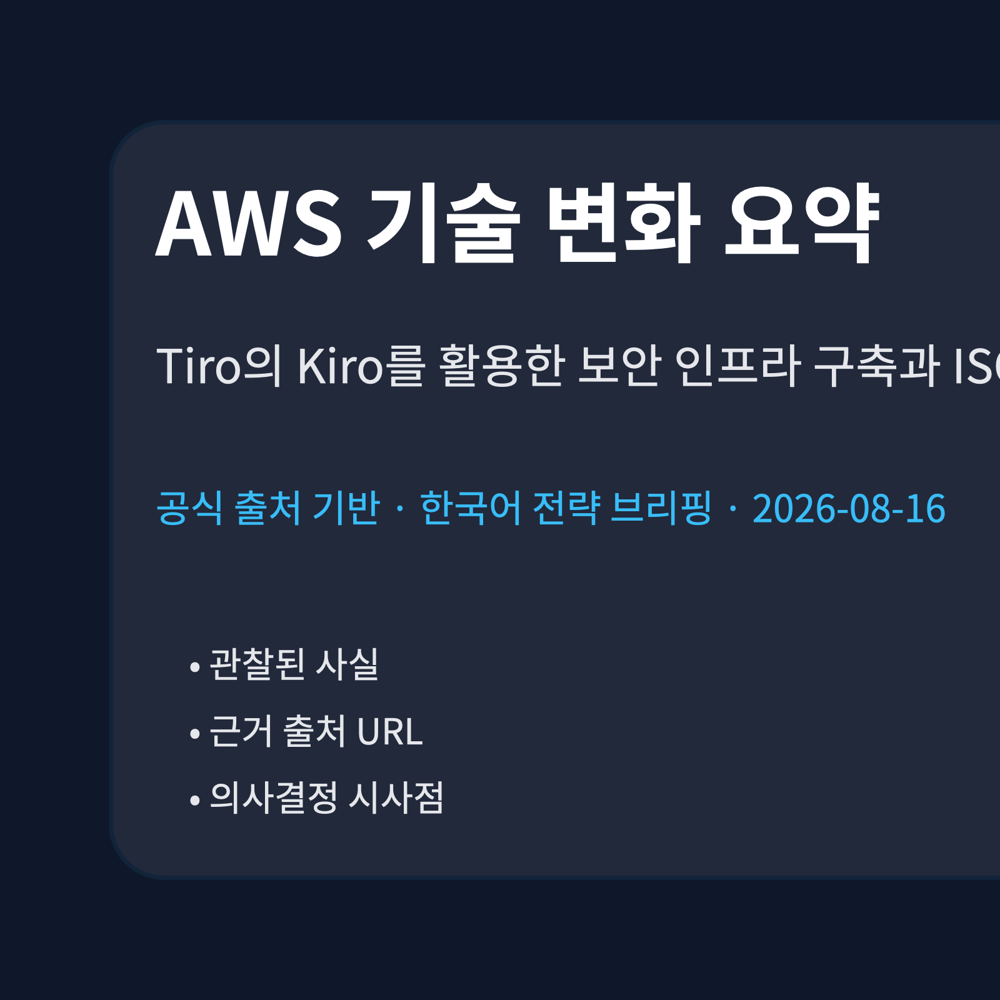
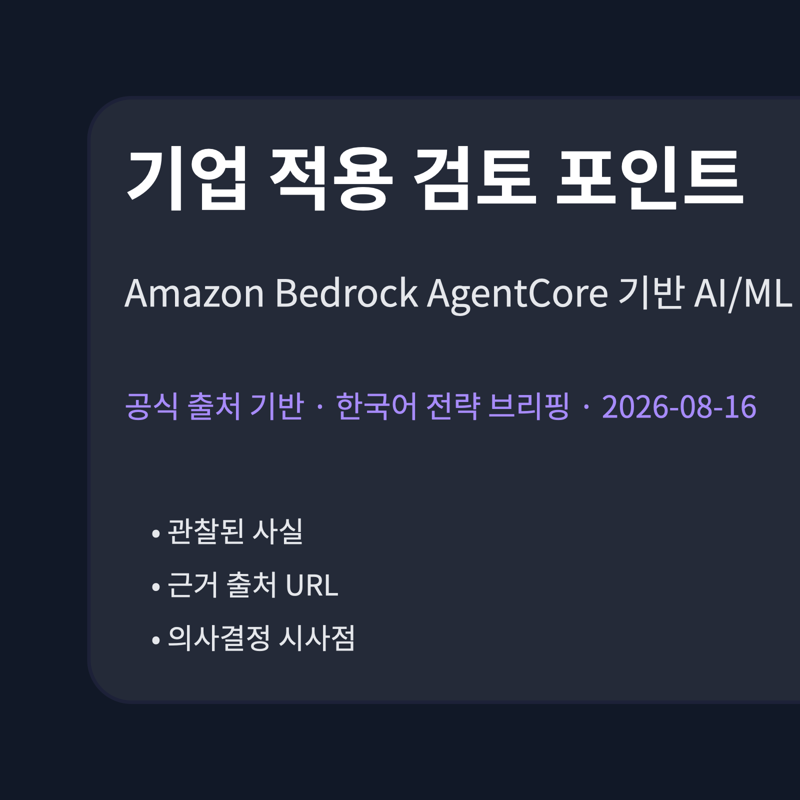
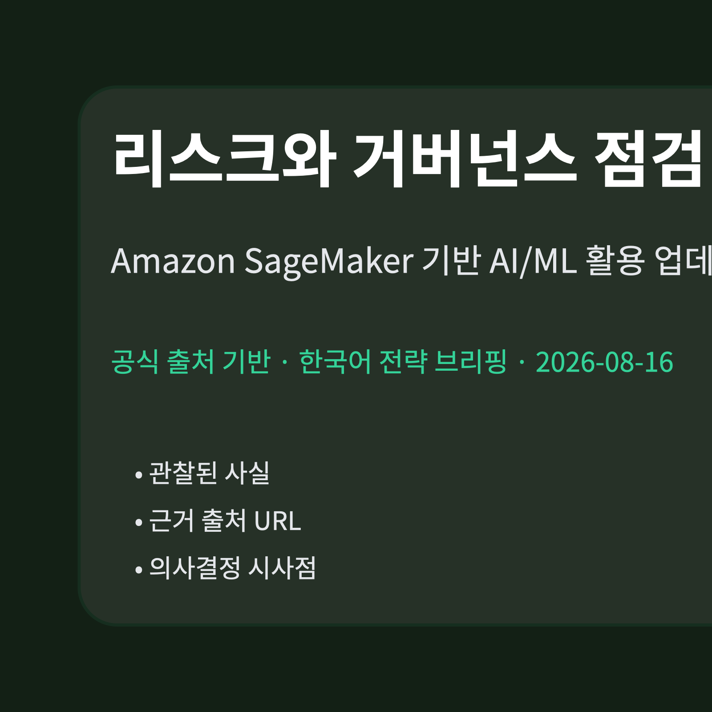

Tiro의 Kiro를 활용한 보안 인프라 구축과 ISO/IEC 27001:2022 인증 취득 여정
신규 수집 항목이 없어 최근 검증된 AWS source-summary를 보조 입력으로 사용했습니다.
근거: AWS Blog 원문
공식 출처 기반 · 2026-08-16 07:04:17 KST
오늘 신규 저장 문서가 없어 최근 검증된 AWS source-summary를 보조 입력으로 사용했습니다. 신규 수집으로 표시하지 않습니다.
이번 브리핑은 수집·검증된 AWS 공식 블로그 항목에서 관찰되는 AI/ML, 클라우드 아키텍처, 보안·거버넌스 신호를 한국 기업 의사결정 관점으로 정리합니다. 근거가 부족한 확장은 하지 않고 원문 URL을 함께 제시합니다.

신규 수집 항목이 없어 최근 검증된 AWS source-summary를 보조 입력으로 사용했습니다.
근거: AWS Blog 원문
신규 수집 항목이 없어 최근 검증된 AWS source-summary를 보조 입력으로 사용했습니다.
근거: AWS Blog 원문
신규 수집 항목이 없어 최근 검증된 AWS source-summary를 보조 입력으로 사용했습니다.
근거: AWS Blog 원문

| 기사 | 게시 | 카테고리 |
|---|---|---|
| Tiro의 Kiro를 활용한 보안 인프라 구축과 ISO/IEC 27001:2022 인증 취득 여정 | 확인 필요 | 확인 필요 |
| Amazon Bedrock AgentCore 기반 AI/ML 활용 업데이트 | 확인 필요 | 확인 필요 |
| Amazon SageMaker 기반 AI/ML 활용 업데이트 | 확인 필요 | 확인 필요 |
관찰된 사실: 신규 수집 항목이 없어 최근 검증된 AWS source-summary를 보조 입력으로 사용했습니다.
근거 출처 URL: https://aws.amazon.com/ko/blogs/tech/tiro-security-infrastructure-with-kiro-iso27001-certification/
기업 의사결정 시사점/리스크/기회: 이 항목은 오늘 신규 수집이 아니므로 현재 의사결정에 적용하기 전 최신 원문 상태 확인이 필요합니다.
관찰된 사실: 신규 수집 항목이 없어 최근 검증된 AWS source-summary를 보조 입력으로 사용했습니다.
기업 의사결정 시사점/리스크/기회: 이 항목은 오늘 신규 수집이 아니므로 현재 의사결정에 적용하기 전 최신 원문 상태 확인이 필요합니다.
관찰된 사실: 신규 수집 항목이 없어 최근 검증된 AWS source-summary를 보조 입력으로 사용했습니다.
기업 의사결정 시사점/리스크/기회: 이 항목은 오늘 신규 수집이 아니므로 현재 의사결정에 적용하기 전 최신 원문 상태 확인이 필요합니다.

권한 범위, 데이터 접근 로그, 비용 추적, 모델·에이전트 관측성, 규제 준수 증적은 각 원문이 제시한 맥락 안에서 별도 검토가 필요합니다. 출처가 충분하지 않은 세부 적용 방식은 확인 필요로 남깁니다.